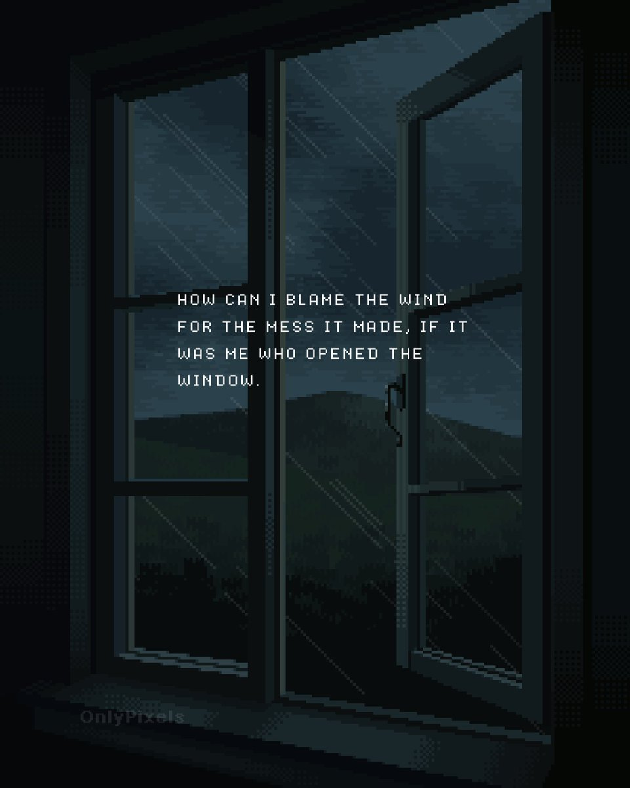

祐穂・H 「暂退网」
@HYuusui1999
@ReedPascal 辛苦了
有困难随时求援

Pascal Reed🕊️
@ReedPascal
对不起大家，最近一直没说话是因为帕的心力真的难以支撑帕做社交了…对不起
我真的好累啊…听着着别人诉说的痛苦却无能为力，连劝慰在那些经历面前都无比苍白…明知如此还要一直被动地倾听，尽全力去劝得到的也只是“谢谢你，对不起，永别了”
我真的好累，真的没有力气去变温柔了，我还想活着…对不起 https://t.co/5Fe6Am8o8O